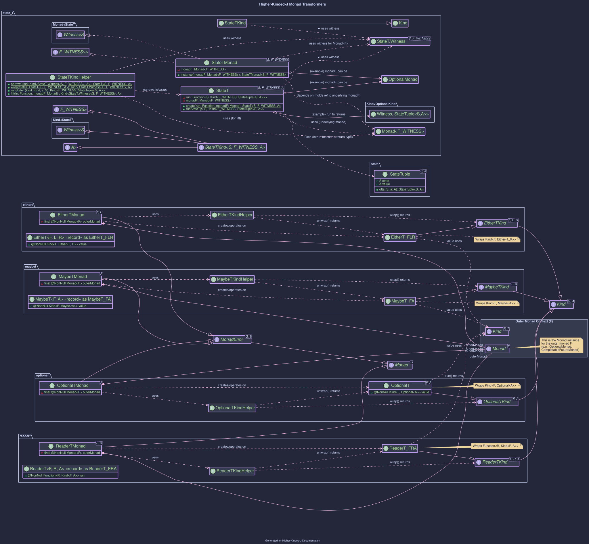
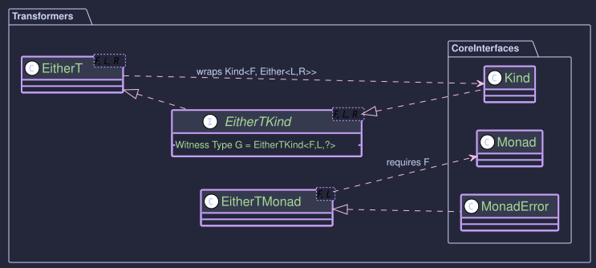

Transformers: Combining Monadic Effects
The Problem
When building applications, we often encounter scenarios where we need to combine different computational contexts or effects. For example:
- An operation might be asynchronous (represented by
CompletableFuture). - The same operation might also fail with specific domain errors (represented by
Either<DomainError, Result>). - An operation might need access to a configuration (using
Reader) and also be asynchronous. - A computation might accumulate logs (using
Writer) and also potentially fail (usingMaybeorEither).
Monads Stack Poorly
Directly nesting these monadic types, like CompletableFuture<Either<DomainError, Result>> or Reader<Config, Optional<Data>>, leads to complex, deeply nested code ("callback hell" or nested flatMap/map calls). It becomes difficult to sequence operations and handle errors or contexts uniformly.
For instance, an operation might need to be both asynchronous and handle potential domain-specific errors. Representing this naively leads to nested types like:
// A future that, when completed, yields either a DomainError or a SuccessValue
Kind<CompletableFutureKind.Witness, Either<DomainError, SuccessValue>> nestedResult;
But now, how do we map or flatMap over this stack without lots of boilerplate?
Monad Transformers: A wrapper to simplify nested Monads
Monad Transformers are a design pattern in functional programming used to combine the effects of two different monads into a single, new monad. They provide a standard way to "stack" monadic contexts, allowing you to work with the combined structure more easily using familiar monadic operations like map and flatMap.
A monad transformer T takes a monad M and produces a new monad T<M> that combines the effects of both T (conceptually) and M.
Key characteristics:
- Stacking: They allow "stacking" monadic effects in a standard way.
- Unified Interface: The resulting transformed monad (e.g.,
EitherT<CompletableFutureKind, ...>) itself implements theMonad(and oftenMonadError, etc.) interface. - Abstraction: They hide the complexity of manually managing the nested structure. You can use standard
map,flatMap,handleErrorWithoperations on the transformed monad, and it automatically handles the logic for both underlying monads correctly.
Transformers in Higher-Kinded-J

1. EitherT<F, L, R> (Monad Transformer)
- Definition: A monad transformer (
EitherT) that combines an outer monadFwith an innerEither<L, R>. Implemented as a record wrappingKind<F, Either<L, R>>. - Kind Interface:
EitherTKind<F, L, R> - Witness Type
G:EitherTKind.Witness<F, L>(whereFandLare fixed for a given type class instance) - Helper:
EitherTKindHelper(wrap,unwrap). Instances are primarily created viaEitherTstatic factories (fromKind,right,left,fromEither,liftF). - Type Class Instances:
EitherTMonad<F, L>(MonadError<EitherTKind.Witness<F, L>, L>)
- Notes: Simplifies working with nested structures like
F<Either<L, R>>. Requires aMonad<F>instance for the outer monadFpassed to its constructor. ImplementsMonadErrorfor the innerEither'sLefttypeL. See the Order Processing Example Walkthrough for practical usage withCompletableFutureasF. - Usage: How to use the EitherT Monad Transformer

2. MaybeT<F, A> (Monad Transformer)
- Definition: A monad transformer (
MaybeT) that combines an outer monadFwith an innerMaybe<A>. Implemented as a record wrappingKind<F, Maybe<A>>. - Kind Interface:
MaybeTKind<F, A> - Witness Type
G:MaybeTKind.Witness<F>(whereFis fixed for a given type class instance) - Helper:
MaybeTKindHelper(wrap,unwrap). Instances are primarily created viaMaybeTstatic factories (fromKind,just,nothing,fromMaybe,liftF). - Type Class Instances:
MaybeTMonad<F>(MonadError<MaybeTKind.Witness<F>, Void>)
- Notes: Simplifies working with nested structures like
F<Maybe<A>>. Requires aMonad<F>instance for the outer monadF. ImplementsMonadErrorwhere the error type isVoid, corresponding to theNothingstate from the innerMaybe. - Usage: How to use the MaybeT Monad Transformer
3. OptionalT<F, A> (Monad Transformer)
- Definition: A monad transformer (
OptionalT) that combines an outer monadFwith an innerjava.util.Optional<A>. Implemented as a record wrappingKind<F, Optional<A>>. - Kind Interface:
OptionalTKind<F, A> - Witness Type
G:OptionalTKind.Witness<F>(whereFis fixed for a given type class instance) - Helper:
OptionalTKindHelper(wrap,unwrap). Instances are primarily created viaOptionalTstatic factories (fromKind,some,none,fromOptional,liftF). - Type Class Instances:
OptionalTMonad<F>(MonadError<OptionalTKind.Witness<F>, Void>)
- Notes: Simplifies working with nested structures like
F<Optional<A>>. Requires aMonad<F>instance for the outer monadF. ImplementsMonadErrorwhere the error type isVoid, corresponding to theOptional.empty()state from the innerOptional. - Usage: How to use the OptionalT Monad Transformer
4. ReaderT<F, R, A> (Monad Transformer)
- Definition: A monad transformer (
ReaderT) that combines an outer monadFwith an innerReader<R, A>-like behavior (dependency on environmentR). Implemented as a record wrapping a functionR -> Kind<F, A>. - Kind Interface:
ReaderTKind<F, R, A> - Witness Type
G:ReaderTKind.Witness<F, R>(whereFandRare fixed for a given type class instance) - Helper:
ReaderTKindHelper(wrap,unwrap). Instances are primarily created viaReaderTstatic factories (of,lift,reader,ask). - Type Class Instances:
ReaderTMonad<F, R>(Monad<ReaderTKind<F, R, ?>>)
- Notes: Simplifies managing computations that depend on a read-only environment
Rwhile also involving other monadic effects fromF. Requires aMonad<F>instance for the outer monad. Therun()method ofReaderTtakesRand returnsKind<F, A>. - Usage: How to use the ReaderT Monad Transformer
. StateT<S, F, A> (Monad Transformer)
- Definition: A monad transformer (
StateT) that adds stateful computation (typeS) to an underlying monadF. It represents a functionS -> Kind<F, StateTuple<S, A>>. - Kind Interface:
StateTKind<S, F, A> - Witness Type
G:StateTKind.Witness<S, F>(whereSfor state andFfor the underlying monad witness are fixed for a given type class instance;Ais the value type parameter) - Helper:
StateTKindHelper(narrow,wrap,runStateT,evalStateT,execStateT,lift). Instances are created viaStateT.create(),StateTMonad.of(), orStateTKind.lift(). - Type Class Instances:
StateTMonad<S, F>(Monad<StateTKind.Witness<S, F>>)
- Notes: Allows combining stateful logic with other monadic effects from
F. Requires aMonad<F>instance for the underlying monad. TherunStateT(initialState)method executes the computation, returningKind<F, StateTuple<S, A>>. - Usage:How to use the StateT Monad Transformer